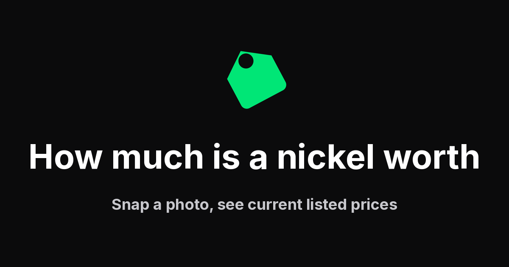

People often type how much is a nickel worth after a jar of change comes off a shelf. The first instinct is to trust a "top 10 nickels in your change" post, or to assume a 1940s date is automatically silver. That is how a common Jefferson nickel gets talked about like a rarity, and how a genuine wartime silver nickel gets spent at face value.
If you want a useful how much is a nickel worth, check yours by photo. Start with the coin in your hand, confirm the date, the mint mark, and the composition, then look at a current listed range for that issue. That is what  How Much Is It Worth: Scanner is built to do.
How Much Is It Worth: Scanner is built to do.
A circulating United States nickel is worth at least five cents. The United States Mint lists the current circulating coin as a 5-cent piece, 5.000 grams, struck in 25 percent nickel with the balance copper. It is not a silver coin, and most worn Jefferson nickels from change stay at that face-value floor.
The main exception is the wartime silver nickel of mid-1942 through 1945, often called a war nickel. In those years the Mint used a 35 percent silver alloy, with copper and manganese, so nickel metal could go to the war effort. You can usually tell one at a glance from the reverse: a large mint mark, P, D, or S, sits above the dome of Monticello. A 1942 nickel without that large reverse mint mark is the earlier copper-nickel composition and should not be priced as a war nickel.
Buffalo nickels, struck from 1913 through 1938, sit in a different market again. Many survivors are worn, and the date can fade completely. A dateless Buffalo nickel is usually a modest coin, according to a PCGS article published in September 2023, which is a published comment, not a live price list. If the date is readable, especially on a scarcer date or mint, check a current guide and recent listings. Liberty Head nickels and earlier types should be identified on their own terms.
Photograph both sides in even light, with the date and any mint mark sharp. For a possible war nickel, include the reverse so the large mint mark above Monticello is visible. Take or upload up to three photos.
The app shows the identification first. If the date, mint, or composition looks off, you correct it before any price lookup. Then you see a Worth about figure, the listed range around it, a confidence level, and the live listings behind the number. Coin figures draw on Numista as well as current public listings, and a live metal price is used as a floor for silver issues. Melt is a floor, not a collector price, and a dealer bid can sit below a simple melt calculation. If the data is thin, the result is labelled as a rough estimate. The product will not invent a precise figure, and it is not a certified appraisal or an offer to buy.
Want to try it? Start your free 3-day trial in the iPhone app at https://apps.apple.com/app/id6832980231. 3 free scans + 3-day unlimited trial. You can also scan it online free at https://howmuchisitworth.today/how-much-is-a-nickel-worth. On Android? Check https://howmuchisitworth.today/ for the Android release.
For ordinary postwar Jefferson nickels, including Westward Journey reverses and later commemorative circulating designs, the honest answer is usually five cents. A few dates, proofs, and errors are collected, but a worn common date from a till should not be priced as if it were one of those.
For wartime silver nickels, melt is the starting floor. Common worn examples often trade near metal value, which is already several times face, and sharper coins can sit above that floor. Do not add an invented retail premium on top of an old melt figure.
Do not clean a nickel. Cleaning usually lowers collector value. You can adjust the condition in a tap and watch the value update. If you decide to sell, you can copy a ready-made listing, with Quick sale, Fair price, or Top dollar, and save the scan to a collection. Common worn war nickels often go to a coin shop, near melt.
Viral "top 10 nickels in your change" lists often mix rare dates with common ones and skip the condition. We will not invent a top-10 price list. If a date looks scarce, compare a current guide and recent listings, and be wary of added mint marks. When you sort a jar, set aside 1942 through 1945 nickels with the large reverse mint mark, any Buffalo nickel, and anything with an obvious error. Everything else in this denomination is usually face value.
The app is free to start. Start your free 3-day trial. 3 free scans + 3-day unlimited trial.
If you are trying to find how much is a nickel worth, check yours by photo. Download the app and scan your first coin free, or start at https://howmuchisitworth.today/how-much-is-a-nickel-worth.